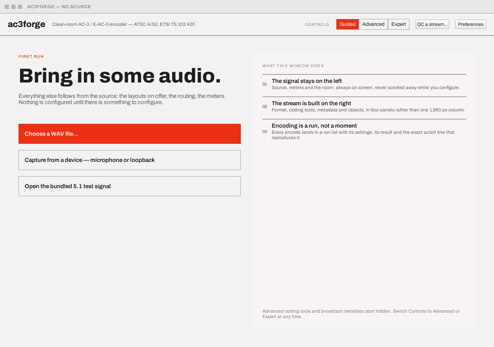
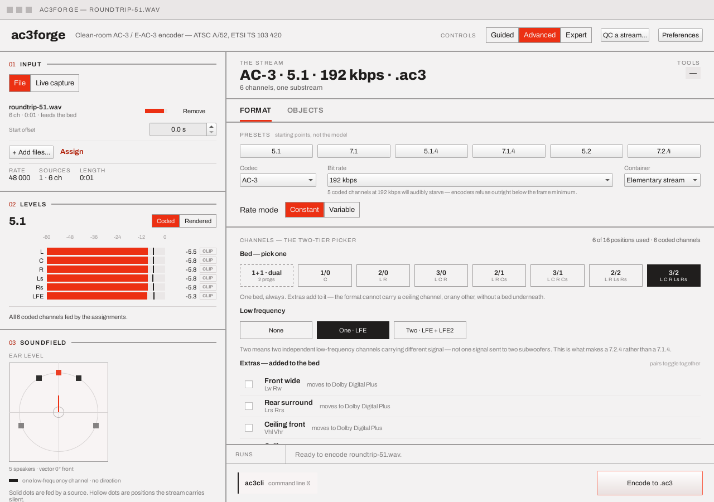
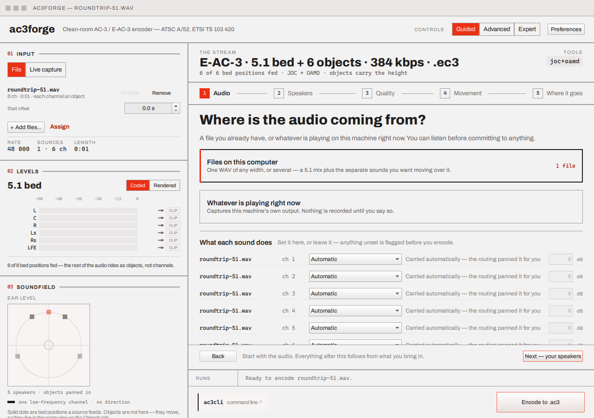

ac3gui — window layout¶
ac3gui (window title ac3forge — <source> once a source is loaded, QML module Ac3Forge) is a
Qt Quick front end over the same
ac3::forge library documented under Library — nothing in the GUI has
logic the library doesn't also expose, and every setting it makes maps onto an equivalent
ac3cli invocation shown live at the bottom of the window. See
Installing for how to get it — winget ships ac3gui alongside
ac3cli in one package; Homebrew doesn't package the GUI, and every platform's release archive
carries it too.
The screenshots in this guide are of the current two-pane "workbench" layout, drawn in the
default Signal palette's light mode. The app ships four palettes — Signal (the design
system's red), Ink (a cooler blue), Console (studio amber), and System, which takes the
desktop's own accent colour (QPalette::Accent: the Windows accent, macOS's control accent,
KDE's — Qt fills it natively, falling back to the highlight colour elsewhere, and an accent
change in the OS Settings lands live). Each palette defines light and dark by hand — dark
is not a mechanical inversion of the light ramp. Both the mode (Light / Dark / System) and the
palette are set in Preferences. Earlier builds — a nine-card single-column design, and a first
cut of the workbench before the design handoff was fully implemented — are superseded; if you
find references to either elsewhere in the repo's history, they predate this guide.
First run¶
Until a source has ever been chosen, the window shows a first-run screen instead of the workbench — three ways in (a WAV file, a capture device, or a bundled 5.1 test signal the app synthesises on the spot) and a one-sentence tour of the window:

Any of those, plus dragging a file onto the window or launching ac3gui path/to/file from a
shell, works from the first-run screen or the workbench alike — a WAV becomes a source, an
already-encoded .ac3/.ec3 opens in the stream player instead. An installed
ac3gui also claims .ac3/.ec3 as a file association on Linux (ac3gui.desktop's
MimeType=audio/ac3;audio/eac3 plus the ac3gui-mime.xml shared-mime-info fragment that declares
them) and on macOS (Info.plist's CFBundleDocumentTypes/UTExportedTypeDeclarations, roadmap
UX2), so opening one from the file manager arrives here the same way the command line does; there
is no Windows leg. See Loading a source.
The window¶
Minimum size 1280×900. Two panes, divided by a vertical rule:

- Header (top): the
ac3forgewordmark and subtitle, a Guided / Advanced / Expert segmented control, a QC a stream… button (a separate dialog that measures an already-encoded file — see QC a stream), an Inspect objects… button (its decode-side counterpart for Dolby Atmos object metadata/audio — see Inspect objects), an Open stream… button (plays an already-encoded file and exports its decode — see Open stream), and a Preferences button. - Left rail — "the signal" (always visible, never scrolled away, and never affected by which tier is selected): three numbered blocks — 01 Input (one input, with a File / Live capture selector, the loaded source list and its totals), 02 Levels (the channel meters), and 03 Soundfield (the plan views). This is what's coming in — see Loading a source.
- Right panel — "the stream": a plan strip showing the derived output headline
(
<codec> · <shape> · <bitrate> kbps · .<suffix>, orquality <n>in VBR mode, or5.1 bed + <n> objectsin object mode), a sub-line counting speakers, coded channels and dependent substreams, and the Annex E tools token on a chip. Beneath it, a tab bar (hidden in Guided, which fills the panel with its own steps) — tabs carry a badge counting their non-default settings, so a collapsed panel still declares itself. - Run strip (bottom): past and in-flight runs — file encodes, recordings, and real live
sessions alike — a compact
ac3clicommand-line chip, and the primary Encode button. Encode runs the encoder in-process, so the full command line is reference material rather than the primary act: clicking the chip opens a popover with the complete live-generated line (wrapped, with Copy). Present in every tier, including Guided — a codec developer must always be able to get back to a command line from what the UI shows, and the popover is one click away. The line is genuinely complete: extra sources ride assrc=, the assignment asmap=, non-default metadata inprint_meta_usage's own grammar, AC-3's barecouple, quoting where names carry spaces; a live source renders thelivesubcommand — a single command even with Matroska selected, via itscontainer=mkvtoken (see Live capture & session) — while a file encode's Matroska container is honestly two commands (… && ac3cli mkv …), because pasting one would write a raw elementary stream into a file named.mkv. Finished chips carry Show in folder and Play — sends that run's own output to a receiver over the same IEC 61937 passthrough path the Format tab's own Passthrough section uses (see Format & channels), greyed out when no device here can bitstream what that particular run actually produced. A run encoded through Guided's Play it on my receiver destination (step 5) carries the device Guided already auto-picked along with it, so its Play needs no fresh device pick. Clicking a chip's summary text (the text is the click target — the status square and the chip's padding are inert, as are its buttons) opens that run's own details popover — status, rate, duration, size, frame count, the failure text if it failed, and the exactac3clicommand line as it stood when that run started, snapshotted rather than read live, so an old chip's popover still shows what actually ran even after the command bar above has since moved on. Failed and cancelled chips also say which they are, in the chip text itself, with a frame count and a distinct square; a failure's banner names the cause first and offers Choose another device / Retry as file; and a refusal that never opened a run (an incomplete assignment, the sixteen-object cap) lands in the same banner instead of only a status line. The strip's last thirty finished runs persist across a restart, restored alongside the "reopen the last session's sources" preference below.
Guided, Advanced, Expert¶
- Guided (the default for a new session) replaces the tabbed right panel with a five-step sequence — Audio, Speakers, Quality, Movement, Where it goes — that reads and writes the exact same state Advanced and Expert do. There is no separate "wizard draft": switch tiers mid-session and whatever guided set is exactly what Advanced or Expert already show for the same field, and vice versa. The step bar and the assistant/Back/Next footer stay pinned; only the step content scrolls between them, and each new step opens at its own top — the way forward is never below the fold.

Guided is not a dead end and not a reduced feature set: step 1 carries its own What each
sound does list — the same per-channel destination dropdowns as the
full assignment table, in plain language — and a jump to that table
with a lossless Back to guided return. Step 2's speaker cards can open a room picker
sub-screen (say what's in the room; the channel layout falls out of the parts). Step 3's
Good / Better / Best rate cards set a fixed CBR bit rate (192 / 448 / 768 kbps) normally, or
— when a VBR default (see Preferences below) or an already-selected Variable rate mode applies —
a VBR quality target instead (40 / 75 / 90), since a fixed bit rate is not what either of those
is actually asking for. Step 4's movement cards drive object mode, with
trajectory presets that author real keyframes; once objects are on, two more cards ask what
should move — Everything moves rewrites every loaded channel's assignment to an object (no
bed left underneath them), while Keep the bed, add movers leaves an existing mix exactly where
it is and only turns still-unassigned channels (a file added since) into objects — both edit the
same assignment table step 1 shows, so a later hand edit there always
sticks. Step 5's Play it on my receiver destination auto-picks the first output device that
can actually bitstream what is about to be encoded (the same "AC-3 + E-AC-3 ready" capability
labelling the Format tab's own passthrough picker uses — see Format &
channels), with a Choose a different
device → link to override it and a stated reason when nothing here qualifies; encoding writes
straight to the planned filename (no save dialog, since the real destination is the receiver) and
the finished run's own Play action reuses that same device. Constraints apply the same way as
everywhere else — they are explained rather than hidden (turning movement on says it fixed the
bed at 5.1, rather than silently locking controls elsewhere).
- Advanced shows a tabbed right panel — Format (presets, the
channel picker, routing, the assignment table, a Loudness section) and
Objects.
- Expert adds the Coding tools and Metadata tabs (Metadata
absorbs the Loudness section, so it appears exactly once). Live session
joins the tab bar in Advanced and Expert whenever the live source is selected in the rail —
sessions running or not — and carries a live badge while one runs.
Switching tiers never discards anything already set — it only changes what's visible (and, for Guided, how it's presented: one question at a time instead of a page of controls). Leaving Expert while a tab only it shows is current falls back to Format rather than showing an empty panel.
The loudness contract¶
The app's own defaults are spec-neutral — dialnorm 31, no DRC, no measurement — the same values a plan carries if nothing here ever touched it. Guided, while it is driving, layers a stronger default on top: measured loudness and film-standard DRC, applied automatically once the flow reaches its "What you are about to make" summary, so the summary already tells the truth before Encode is ever pressed. This never overwrites an actual edit — the moment Loudness/Metadata is set by hand (in Guided itself, or in Advanced/Expert during the same session), the contract steps aside for good, this session, and dialnorm/DRC stay exactly what was set.
Dual mono (1+1) gets the same contract, applied to each of its two programmes independently —
see Dual mono for why nothing is shared between them.
Preferences¶
A real dialog, persisted across sessions (QSettings), three columns:
- Appearance — theme (Light / Dark / System) and the palette (Signal / Ink / Console / System — the last follows the desktop's accent colour where the platform exposes one); Language (System / English / Français / Deutsch / Español / العربية / עברית / יידיש), switching live with no restart — Arabic, Hebrew and Yiddish also mirror the whole window right-to-left and switch to a bundled Noto Sans face, since Archivo has no glyph coverage for either script; see Localisation for what is translated today; which meter rows to show by default (Coded / Rendered); Explanations — show the plain-language notes beside controls, and optionally warn before a choice changes the codec (the codec follows the channels either way; the warning only makes the moment deliberate).
- When ac3forge opens — the Controls tier (including "whatever I used last"); reopen the
last session's sources and assignments (saved as one unit on close, restored on open — a file
gone missing fails its load with the usual message rather than aborting the rest); optionally
start on the last screen. Files and runs — the output folder ("beside the first source" by
default), the
{source}.{ext}naming pattern every save dialog and auto-named take follows, and keep-partial-output: a failed or cancelled run's frames land beside the intended output as<name>.partial.<ext>, named and kept, never silently discarded. - Defaults for a new encode — container, rate mode, bit rate, VBR quality, DRC profile,
measure loudness. The codec is deliberately not a default — it follows the channels (see
Format & channels), and a stale default would contradict that.
Clicking Save applies a changed default to whichever of these fields nothing has explicitly
touched this session yet — the same contract the loudness contract
already gives DRC profile and measure loudness, generalised to container/rate mode/bit
rate/VBR quality too. An edit made before Save is never clobbered by it: touch a field once (in
Guided, Advanced or Expert, any of them count) and Preferences stops overwriting it for the rest
of the session, exactly as the loudness contract already promises for Loudness/Metadata.
Capture — start monitoring as soon as a device is chosen, and whether Record asks for a
filename or writes straight to the output folder under a timestamped take name. Command
line — keep the
ac3cliline visible.
Next¶
The rest of the guide, in reading order:
- Loading a source — pick a WAV (or several), or capture live; watch the channel meters
- Format & channels — layout, dual mono, VBR, bit rate, container — and the assignment table everything else derives from
- Objects & motion — Dolby Atmos objects
- Live capture & session — capture → encode → monitor/passthrough, live
- Multi-source & assignment — several sources at once, each channel individually assigned to a bed position, an object, or a dual-mono programme
- Coding tools — Annex E tools (Expert; the tools apply to E-AC-3 only, and under AC-3 the tab shows an explainer instead)
- Metadata — loudness, downmix, heavy compression (Expert)
- QC a stream — measure an already-encoded file against its own metadata, from the header's own dialog
- Inspect objects — see the Dolby Atmos object positions and audio a decoder actually recovers from an already-encoded file, from the header's own dialog
- Open stream — play an already-encoded file and export its decode, from the header's own dialog or a finished run's own More… menu
- Localisation — what's translated today, the pseudo-locale QA fixture, and how to update or add a language
Or start with Concepts if terms like "dependent substream" or "JOC" are unfamiliar — the GUI uses the same vocabulary as the standards it implements.